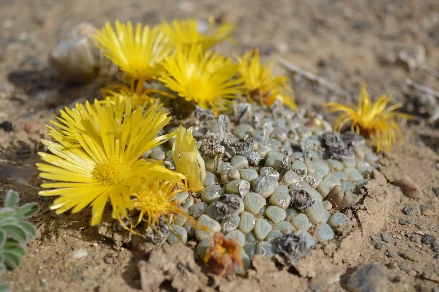

多肉植物 · 植物界
五十铃玉 Fenestraria rhopalophylla

番杏科窗玉属小型多肉，棒状叶顶端有透明窗，常半埋沙中只露窗面，秋季开黄白色花，原产南非与纳米比亚。
- 分类
- 门被子植物门纲木兰纲目石竹目科番杏科属窗玉属
- 栖息环境
- 南非与纳米比亚的干旱沙地，喜光、耐旱
- 地理分布
- 原产南非与纳米比亚，世界各地盆栽栽培
- 保护级别
- 暂无评估
物种志
五十铃玉为番杏科窗玉属小型多肉植物，株高 3–5 厘米，叶片棒状、肉质，长 3–6 厘米，绿色，顶端平截并呈半透明“窗”，形似小玉棒。花单生，黄色或白色，花期秋季；果实为蒴果。
五十铃玉原产南非和纳米比亚的干旱沙地，野生状态下叶片大部分埋于沙中，只露出顶端的透明窗进行光合作用，这种形态可减少水分蒸发和强光灼伤。栽培时宜用颗粒土并把植株基部稍埋，保持充足光照和良好通风，浇水见干见湿，夏季高温时适当控水。它叶端的窗面晶莹剔透，是多肉爱好者喜爱的窗面系品种，繁殖以播种和分株为主，分株宜在春秋凉爽时进行，缓苗期保持盆土微干。
形态与习性
- 株高3–5 厘米，叶片长 3–6 厘米
- 花期秋季，花黄色或白色
- 果期花后结蒴果
- 光照喜充足阳光
- 水分耐旱，见干见湿，夏季控水
- 土壤颗粒为主、排水良好的沙质土
- 繁殖播种、分株
- 主要用途小型盆栽、窗面多肉收藏
趣味知识
- 五十铃玉的叶片顶端平截、半透明，像一扇小窗，因此得名“窗玉”。
- 野生状态下叶片大部分埋在沙中，只露出窗面进行光合作用。
- 把植株基部稍埋入颗粒土，更接近它的自然生长状态。
- 叶端透明窗能透光，同时减少水分蒸发和强光灼伤。